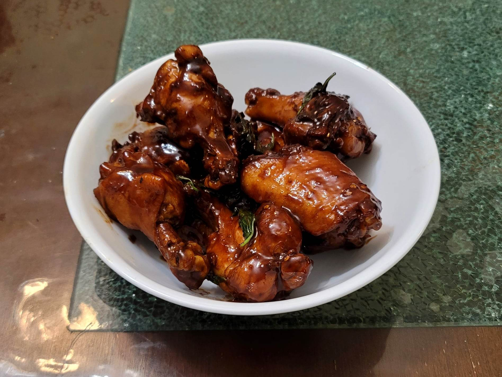

San Bei Ji (Three Cup Chicken)

Ingredients:
- 1 3/4 lb (800g) Chicken drumettes and wingettes
- 1 tbsp Sesame oil
- 2 tbsp Vegetable oil
- 6 slices Ginger
- 5 cloves Garlic, sliced
- 1 Dried red chili
- 1/4 cup Water
- 1/4 cup Shaoxing wine
- 3-5 tsp Dark soy sauce, to preference
- 1 1/2 tbsp Light soy sauce
- 2 tsp Sugar
- 1 small bunch Thai basil, roughly chopped
Instructions:
- Heat the vegetable oil and sesame oil in a wok over medium heat. Then add in the ginger, garlic, and chili and let cook for about 1-3 minutes or until fragrant, tossing occasionally.
- Then turn the heat to the highest setting and add all the chicken to the wok in a single layer. Let sear for 1-2 minutes per side or until golden brown.
- Then immediately add in the water, Shaoxing wine, dark and light soy sauce, and sugar. Stir to mix and then cover. Lower the heat to medium and let cook for 15-20 minutes or until tender.
- Remove the cover and place over high heat. Stir-fry to rapidly reduce the sauce for a few minutes until it clings to the chicken, while stirring constantly to ensure it doesn't burn. During the last minute of stir-frying, add in the thai basil and stir-fry until it has wilted.
- Remove from the heat and serve immediately.